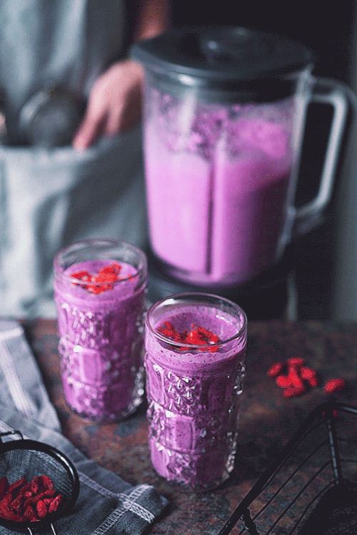

Blueberry Smoothie Recipe

Description
Blueberry smoothie recipes are a great way to use fresh or frozen berries, and this is a delicious one!
Ingredients
- 1 Cup Blueberries
- 1 Container Plain Yogurt
- 3/4 Cup 2% Reduced-Fat Milk
- 2 Tablespoons White Sugar
- 1/2 Teaspoon Vanilla Extract
- 1/8 Teaspoon Ground Nutmeg
Instructions
-
Blend blueberries, yogurt, milk, sugar, vanilla, and nutmeg in a
blender until frothy, scraping
down the sides of the blender if needed.
-
Divide between 2 glasses and serve immediately.
Back To Homepage